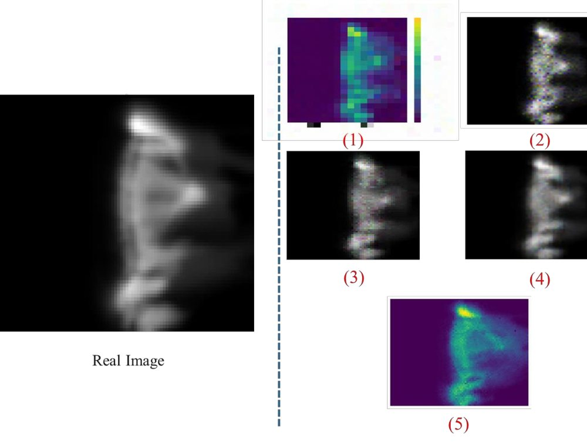
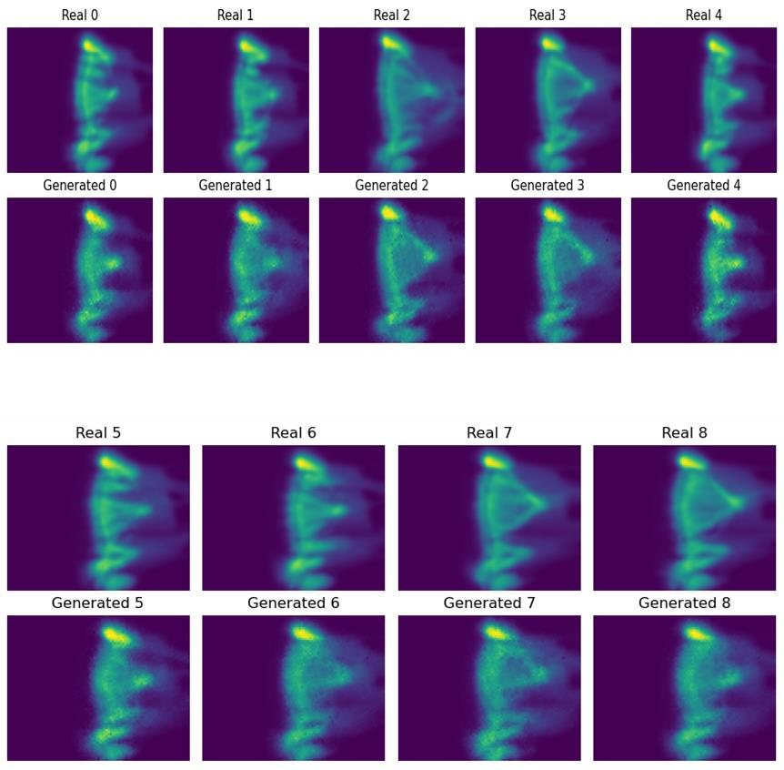
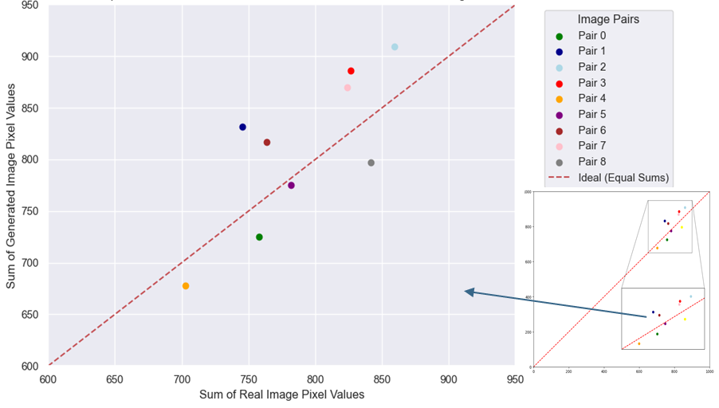
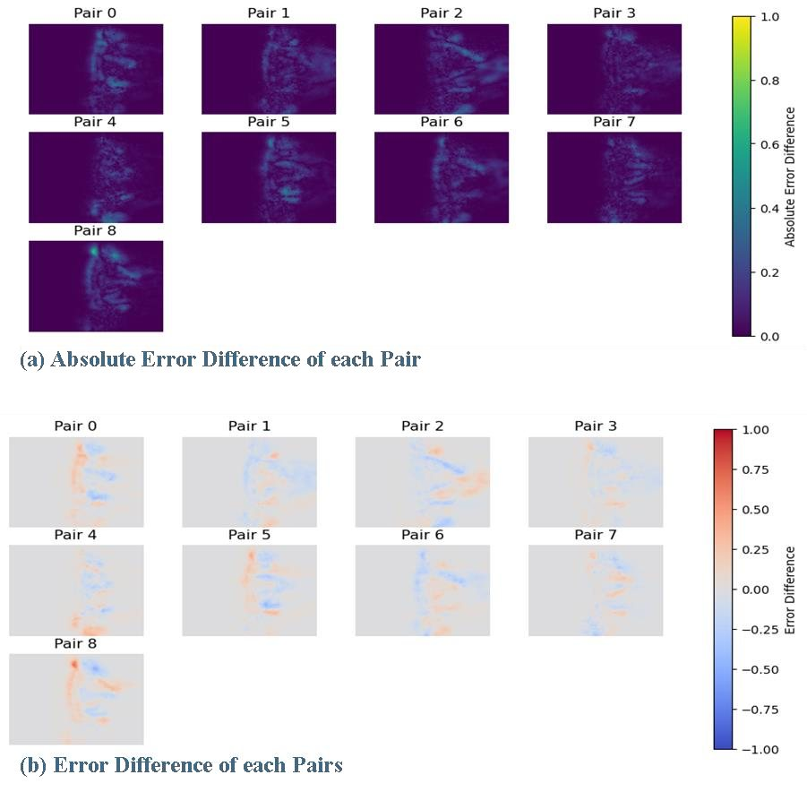
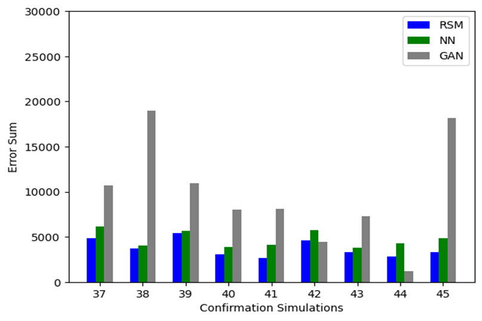

Can a GAN stand in for a slow geological simulation?
New to me: GANs · First result: 2–3 weeks · Whole study: 2 months, 5 training trials, compared against 2 baselines
I tested whether a generative adversarial network (GAN) could act as a fast proxy for stratigraphic forward simulations, producing reservoir thickness maps from four uncertain parameters. It reproduced the geometry of the sediment bodies, but with higher pixel-level error than a response surface and a neural network, mainly because of the very small training set.
- Data
- 45 simulation runs, 36 to train and 9 to test
- Model
- GAN with a dense generator and a CNN discriminator
- Output
- 69 × 89 reservoir thickness map
- Outcome
- Right shapes, higher error than the baselines
Context
Forward stratigraphic modeling (FSM) simulates how a sedimentary basin fills through time [1]. It is used, for example, to anticipate where reservoir rock is distributed in carbonate platforms [2]. FSM is deterministic: one set of input parameters gives one outcome, and confidence in the result depends on how many calibration points constrain it.
In practice, several inputs are uncertain: geological concepts, numerical assumptions and parameter values. In this study, a carbonate platform in the Middle East was simulated with four uncertain parameters: sea level, paleobathymetry, and carbonate production as a function of time and of depth. The output of interest is a map of reservoir thickness.
Problem
Uncertainty is usually handled by running the simulator many times. In a consulting setting, each option has a weakness:
- Reference model with best and worst cases: quick, but too simple to represent the range of outcomes.
- Monte Carlo sampling: thorough, but too slow, since every FSM run is expensive.
- Proxy models: a fast surrogate trained on a limited set of simulations.
The company’s tool relies on the response surface (RS) method. An internal comparison in 2023 found that RS was still slightly better than a fully connected neural network (NN), but the two were close. That suggested a more expressive model might surpass RS.
Research question: can a generative adversarial network (GAN) [3], which has already been used to generate realistic facies models [4], produce accurate thickness maps from the four uncertain parameters?
Methodology
Data
Each simulation run combines one value of each of the four uncertain parameters, chosen by an experimental design. The dataset holds 45 runs: 36 for training and 9 for confirmation (testing). Each run’s thickness map is rasterized as a 69 × 89 single-channel image. Because 36 images is very little, I also tested data augmentation, which raised the training set above 1,500 samples in some experiments.
Architecture
The GAN follows the standard two-network design [3]. The generator maps the four parameter values, with noise, to a 69 × 89 map through stacked fully connected blocks (Dense, LeakyReLU, batch normalization) and a final reshape. The discriminator is a convolutional classifier: three Conv2D and LeakyReLU stages, then Flatten and a Dense layer that outputs real or fake.
minG maxD 𝔼[log D(x)] + 𝔼[log(1 − D(G(z)))]
The standard adversarial objective, where x is a real simulated map and z is the generator’s input.
Training
Training alternates between the two networks: the discriminator learns to separate real from generated maps, then the generator is updated to fool it. I iterated on image size, dataset, number of epochs and the range of the random inputs. Table 1 summarizes the trials and Figure 3 shows their outputs.
| Trial | Image size | Training images | Epochs | Time | Note |
|---|---|---|---|---|---|
| 1 | 28×28×3 | 36 | 30,000 | 120 min | First attempt |
| 2 | 64×64×3 | 36 | 8,500 | 95 min | |
| 3 | 64×64×3 | 113 | 6,000 | 39 min | Two datasets combined |
| 4 | 64×64×3 | 113 | 6,500 | 46 min | Inputs constrained to [−1, 1] |
| 5 | 69×89×1 | 130 | 500 | 16 min | Final: native map size |

Evaluation
Evaluation used the nine held-out runs, in four ways: a visual comparison of real and generated maps; the sum of pixel values, which should match if total thickness is preserved; pixel-wise error and absolute error maps; and the error sum per confirmation run, compared against the RS and NN proxies.
Implementation
Python, with [Keras/TensorFlow or PyTorch: confirm]. Training time on [hardware: confirm] ranged from 16 minutes (final setup) to 2 hours (first trial).
Results
The GAN reproduces the main geometry in all nine test runs: the elongated body, its high-thickness zone at the top, and the lobes along its length. The generated maps are visibly noisier and blurrier than the references.

Summing pixel values tests whether total thickness is preserved. Points would fall on the diagonal if it were. They scatter on both sides, with individual runs over- or underestimated by up to roughly 12 percent, and no consistent bias.

Error maps show where the differences sit. Absolute error concentrates along the edges of the sediment body and around its high-thickness zone, and the signed error shows both over- and underestimation.

Against the baselines, the answer is clear. On the nine confirmation runs, the GAN has a higher error sum than both RS and NN in most runs, and several times higher in the worst ones. It has the lowest error in only one or two runs.

So in this setting, a GAN does not beat simpler proxies.
Takeaway
GANs are unstable and data-hungry. Published geoscience applications typically train on more than 10,000 images, against about 130 here. The small dataset left no room for deeper networks, and every attempt to add capacity drifted quickly into overfitting. The final model therefore captures geometry but not fine pixel-level detail.
The practical lesson: when simulations are expensive and few, a simple proxy such as RS or a small neural network is the better first choice. A GAN becomes attractive once the dataset grows.
Limitations
- Very small training set, built from 45 simulation runs.
- Deeper networks overfitted quickly, which capped image quality.
- Blurry output, with pixel-level accuracy below simpler methods.
Future improvements
- Generate more simulation runs to enlarge the training set.
- Evaluate a combination of the GAN and the neural network.
- Try a GAN combined with a variational autoencoder, which may give sharper images from under 150 training images.
References
- Huang, X., Griffiths, C.M. and Liu, J., 2015. Recent development in stratigraphic forward modeling and its application in petroleum exploration. Australian Journal of Earth Sciences, 62(8), 903–919.
- Burgess, P.M., Lammers, H., van Oosterhout, C. and Granjeon, D., 2006. Multivariate sequence stratigraphy: tackling complexity and uncertainty with stratigraphic forward modeling, multiple scenarios, and conditional frequency maps. AAPG Bulletin, 90, 1883–1901.
- Goodfellow, I.J., Pouget-Abadie, J., Mirza, M., Xu, B., Warde-Farley, D., Ozair, S., Courville, A. and Bengio, Y., 2014. Generative adversarial nets. Advances in Neural Information Processing Systems 27, 2672–2680.
- Zhang, T.F., Tilke, P., Dupont, E., Zhu, L.C., Liang, L. and Bailey, W., 2019. Generating geologically realistic 3D reservoir facies models using deep learning of sedimentary architecture with generative adversarial networks. Petroleum Science, 16, 541–549.